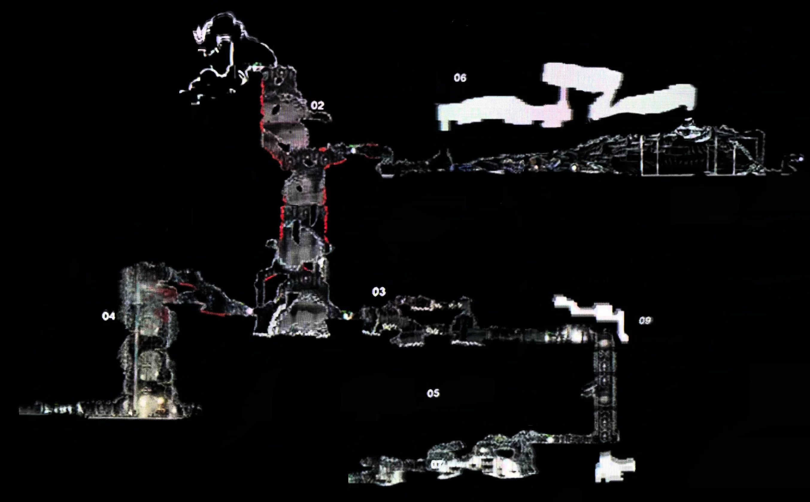

The Gloom was the predecessor of Bilewater. It had two main versions, the version seen in the release trailer for Hollow Knight: Silksong, and a reworked version, similar in layout to Bilewater, in 2021, which is shown on this page on the map.
Assets from The Gloom were reused for Bilewater and the Putrified Ducts. Originally, it itself was meant to house the Pale Lake, which likely means the Putrified Ducts would not have been a thing at all.
Interestingly, the Gargant Gloom enemy makes an appearance in the trailer, though it shoots purple blobs instead of black void blobs. This enemy was reused in The Abyss, however, The Abyss itself was not created until after the major cuts in 2021, only making an appearance starting on the April 2022 ACMI map.
Overall, this area is relatively minor, though interesting for its darker colour scheme and its role being taken over by Bilewater and the Putrified Ducts, which are swamplike areas.
